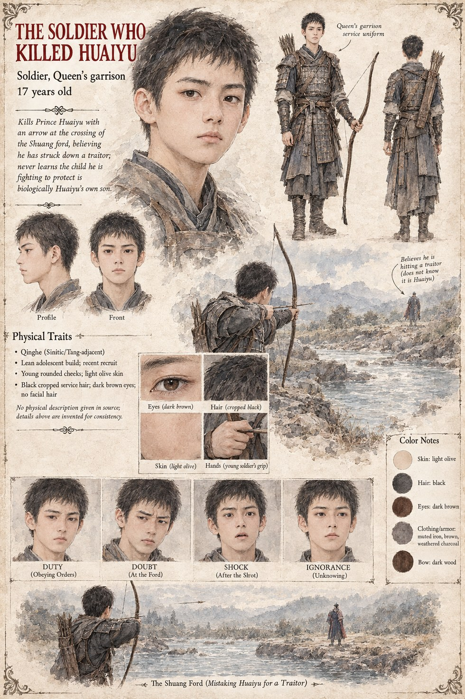

The Soldier Who Killed Huaiyu
Soldier, Queen's Garrison · 17 years old
A seventeen-year-old recruit in the Queen's garrison, given no other distinction in the record beyond the one act he performs at the Shuang ford in the war's second autumn: sighting a mounted man he has been told is a traitor to the Crown, and loosing the arrow that kills Prince Huaiyu. He never learns, and the record gives no sign anyone ever tells him, that the man he shot was the true, unacknowledged father of the very child his garrison exists to protect.
Appears in The Listening Water